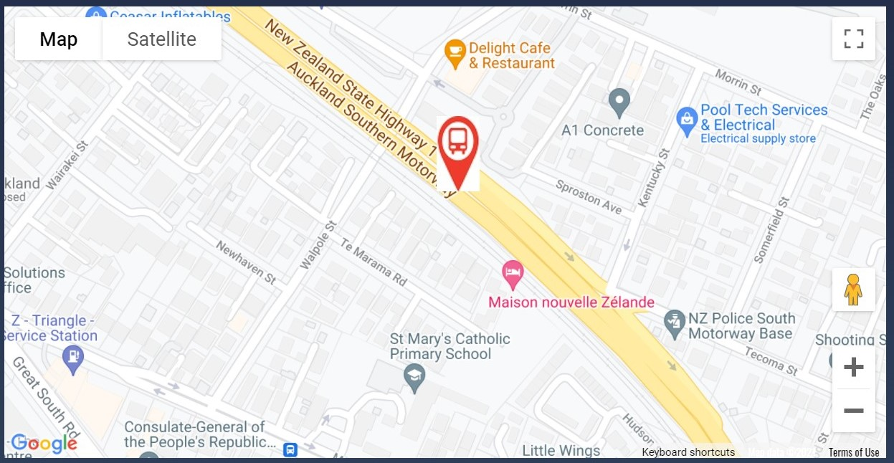
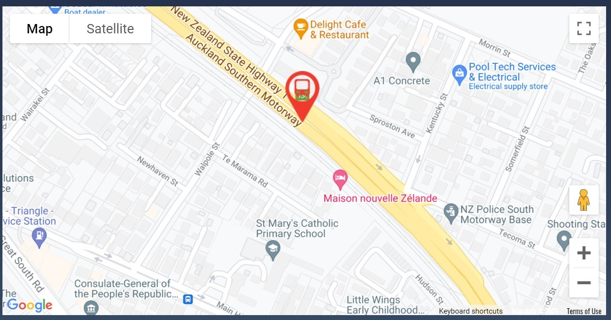

A few issues that I found and fixed are listed here.
I found that the javascript fetch() method does not support loading local files using the 'file://' protocol. This meant that I couldn't test loading the JSON file without deploying the website to github. This took me a few hours to figure out why it didn't work.
Setting up a Google Maps API key, which involves creating a billing account with Google, was pretty complex to understand. I found it hard to understand what needed to be configured and it was quite a lot of trial and error involved. You have to set up a new Google Project and enable the maps API, create a new set of API credentials in the project, and make sure your account is connected to a payment method.
As soon as I uploaded my source code to github, Google mailed me because I was using an unrestricted API key that would allow anyone to use the key for mapping. The message looked like this (the API key has been covered up)
I fixed this by going into the Google API manager and setting a website restriction as below:

I first tried using a white background on my bus marker but it looked really ugly and blanked out the background
I fixed this by using paint.net to replace the white background with a transparent background
I was really surprised to find that Google Maps requires absolute paths to KML files rather than relative ones. This caused me a lot of google searching and trial-and-error debugging to understand the reason my routes weren't loading.
After loading my KML route onto the Google Map I wanted to be able to change the appearance of the busstop marker the user has selected. However, Google Maps doesn't let me alter a marker loaded as part of a KML layer, so I'm going to change to create thebus-stop markers. This means I'll need to add the latitude and longitude of each bus-stop to the JSON data file.
Setting up a table in AWS DynamoDB was easy but setting up the security so it could be accessed from the webpage was really, really hard. When I first did this I set the access key in the javascript but this got detected by AWS when I uploaded it to github as can be seen in the email below
I ended up having to set up an AWS Cognito 'identity pool' which works fine but it was not what I was expecting.
Overall, I've realised that cloud services like Google Maps and AWS DynamoDB, are really powerful but there is a huge amount of complexity that I didn't realise I was going to run into when using them. My estimates of how long this would take were way off - I'll learn from that in future.
During user testing of the Tracker App, I received feedback that the display was too small to allow it to be quickly checked to see if things were running okay. The text was all the same colour and size which meant it was really hard to quickly check. It originally looked like this on a mobile device.
I changed the size and colours of the text. I set the route in yellow, and successful messages in grenn, with errors in red. I also shortened the timestamp so it was easier to read.
I had to learn to use asynchronous functions a LOT in this project. Normally, code runs top-to-bottom and each line must complete before the next line is executed, so it's easy to understand when a certain piece of code will run. However, obtaining GPS locations, requesting Google map directions, and reading and writing to DynamoDB are all asynchronous. This means that you must provide a 'callback' function to them so when the work you've asked them to do is finished, they call the callback function to allow you to do the next piece of work you want to do. This means that code is scattered around quite a bit and it's very hard to figure out what exactly is going to happen at any given time. I understand that asynchronous functions are used to prevent the user interface from locking up while long-running things are taking place but it really alters how you construct your application and, to be honest, makes it pretty difficult to debug sometimes.